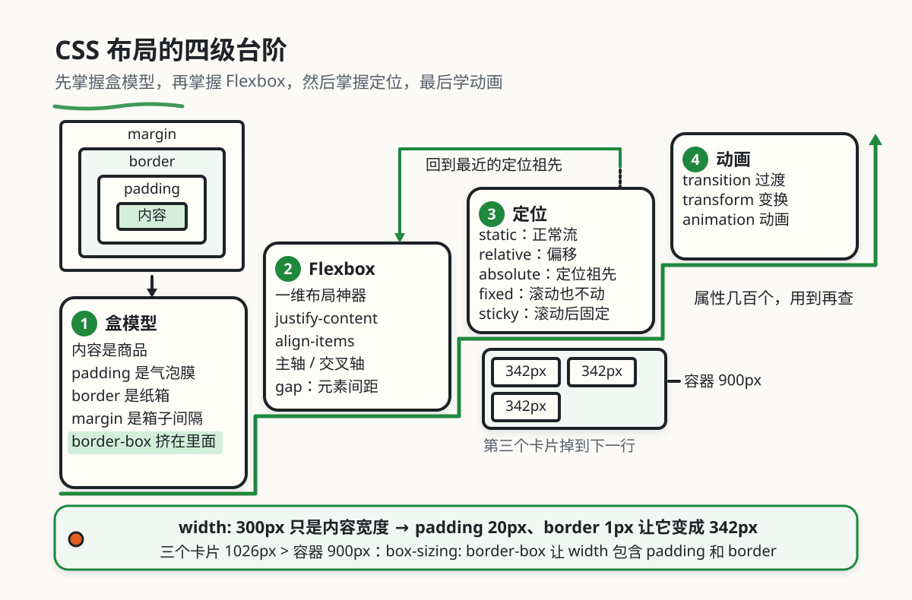

HTML / CSS 布局体系
本章目录 · 1 节
交互入口：本章模拟器位于原课程页面，需联网打开。书中保留原理、代码与操作说明；按代码在本地练习时，先建独立的练习目录。
HTML/CSS 布局基础
核心问题 网页是怎么做出来的？为什么有的网页只有文字，有的却像应用一样可以交互？ 这个问题会引出 Web 开发的三大基石，让你理解每一个网页背后的结构。
1. HTML、CSS、JavaScript 分别是什么
1.1 从静态网页到动态应用
想象一下你在街上看到的海报。你只能看，不能互动——海报不会因为你看了就改变内容，也不会因为你点了某个地方就弹出更多信息。
早期的网页就是这样的"电子海报"：只能看、不能改、内容固定。
但现代网页完全不同了。它们像桌面应用一样：
- 你可以点击、拖拽、输入、上传
- 页面会根据你的操作实时变化
- 可以像软件一样完成复杂任务（比如在线视频剪辑）
这种转变的核心原因，就是网页技术的三大基石：HTML + CSS + JavaScript。
1.2 一个比喻：盖房子
| 技术 | 🏠 房子比喻 | 实际作用 | 具体例子 |
|---|---|---|---|
| HTML | 房子的结构和材料 | 定义网页的内容和层级 | 这是一面墙、这是一扇窗、这是一个房间 |
| CSS | 房子的装修和外观 | 控制网页的样式和布局 | 墙刷成蓝色、窗户放在东边、地板铺瓷砖 |
| JavaScript | 房子的电器和智能系统 | 让网页具备交互和逻辑 | 按开关灯亮了、开门窗帘自动拉开 |
三者的关系
HTML → CSS：先有房子，才能装修。HTML 是基础，CSS 是美化。
HTML + CSS → JavaScript：先有房子和装修，才能装智能系统。JavaScript 会让"死"的页面变"活"。
核心思想：三者各司其职，缺一不可。只有 HTML 的页面很丑，只有 HTML+CSS 的页面不能互动，三者齐全才能做出像微信网页版、淘宝这样的"Web 应用"。
1.3 动手试试看
👇 原课程的交互演示展示了 HTML/CSS/JavaScript 三者如何协作：
2. HTML：网页的骨架
2.1 需要 HTML的原理
在 HTML 出现之前，互联网上的内容只是纯文本。就像你现在看的这段文字，没有任何格式、没有层级、没有链接。
纯文本的问题是什么？
- ❌ 无法表达层级：分不清哪是标题、哪是正文、哪是注释
- ❌ 机器看不懂：搜索引擎、屏幕阅读器（盲人用）无法理解内容
- ❌ 无法交互：没有链接、没有按钮、没有输入框
HTML (HyperText Markup Language) 就是为了解决这个问题诞生的。它用"标签"（tag）来标记内容的含义，让浏览器知道"这是什么"。
2.2 HTML 代码长什么样
HTML 的基本单位是"标签"（tag）。标签用尖括号 < > 包裹，成对出现：
<h1>这是标题</h1>
<p>这是段落</p>
<a href="url">这是链接</a>
关键概念：
| 概念 | 解释 | 例子 |
|---|---|---|
| 标签 | 用尖括号包裹的标记 | <h1>、</h1> |
| 元素 | 标签 + 内容的整体 | <h1>标题</h1> |
| 属性 | 标签上的附加信息 | href="url"、class="card" |
| 嵌套 | 标签里再放标签 | <div><p>文字</p></div> |
2.3 看懂 HTML 代码的方法
零基础必读：看代码的方法
很多新手看到一堆 <xxx> 就晕了。其实看 HTML 代码有固定套路：
第一步：找"最外层"
<div class="card"> ← 这是容器，里面装着内容
<h2>标题</h2>
<p>描述文字</p>
</div>
第二步：看标签名猜含义
| 标签名 | 一眼记住 | 里面放什么 |
|---|---|---|
<div> |
大盒子 | 任何内容，用来分组 |
<span> |
小盒子 | 文字片段，用来标记 |
<p> |
段落 | 一段文字 |
<h1>-<h6> |
标题 | 标题文字，数字越小越重要 |
<a> |
锚点/链接 | 可点击跳转的内容 |
<img> |
图片 | 不放内容，用 src 指向图片 |
<button> |
按钮 | 可点击的文字/图标 |
<input> |
输入框 | 不放内容，用户输入的地方 |
第三步：看 class 和 id
<div class="user-card" id="user-123">
class="user-card"→ 这个元素的"类型"，CSS 可以批量选中id="user-123"→ 这个元素的"身份证号"，唯一标识
第四步：缩进表示层级
<body>
<header> ← 缩进表示 header 是 body 的孩子
<nav> ← nav 是 header 的孩子
<a>首页</a> ← a 是 nav 的孩子
</nav>
</header>
</body>
2.4 常用 HTML 标签速查
结构标签（定义页面骨架）：
<h1>这是一级标题</h1>
<h2>这是二级标题</h2>
<p>这是一个段落</p>
<div>这是一个容器（用来分组）</div>
<span>这是行内容器（用来标记文字）</span>
链接与媒体（让页面丰富）：
<a href="https://example.com">点击这里跳转</a>
<img src="photo.jpg" alt="照片描述" />
<video src="movie.mp4" controls></video>
表单（收集用户输入）：
<form>
<input type="text" placeholder="请输入用户名" />
<input type="password" placeholder="请输入密码" />
<button type="submit">登录</button>
</form>
语义化标签（HTML5 新增，让页面含义更明确）：
<header>页面头部</header>
<nav>导航栏</nav>
<main>主要内容区</main>
<article>一篇文章</article>
<aside>侧边栏</aside>
<footer>页脚</footer>
为什么要用语义化标签？
<div class="header"> 和 <header> 看起来效果一样，为什么要用后者？
- SEO 友好：搜索引擎能更好理解页面结构
- 可访问性：屏幕阅读器能快速定位"导航""主要内容"等区域
- 代码可读性：看到
<header>一眼就知道是头部
什么时候用 div？ 当没有合适的语义标签时。比如一个纯装饰性的容器。
2.5 记住这么多 HTML 标签的方法
新手困惑
"HTML 标签有一百多个，怎么记得住？"
答案是：不需要全部记住。 实际开发中，90% 的情况只用 20 个左右的标签。
按用途分类记忆
一、页面结构类（画骨架）
| 标签 | 记忆口诀 | 用途 |
|---|---|---|
<header> |
头 | 页面或区块的头部 |
<nav> |
导航 | 导航链接区域 |
<main> |
主体 | 页面主要内容（每页只有一个） |
<article> |
文章 | 独立的内容块（可以单独拿走还有意义） |
<section> |
章节 | 有主题的内容分组 |
<aside> |
旁边 | 侧边栏、补充内容 |
<footer> |
脚 | 页面或区块的底部 |
记忆方法：想象一张报纸——有报头（header）、目录（nav）、正文（main/article）、专栏（aside）、报脚（footer）。
二、内容标记类（说清楚是什么）
| 标签 | 记忆口诀 | 用途 |
|---|---|---|
<h1>-<h6> |
标题1-6 | 标题层级，h1 最大最重要 |
<p> |
段落 | 一段文字 |
<ul>/<ol>/<li> |
无序/有序/列表项 | 列表 |
<a> |
锚点 | 链接，跳转用 |
<img> |
图片 | 图片 |
<video>/<audio> |
视频/音频 | 多媒体 |
<strong>/<em> |
强调/斜体强调 | 语义化的强调 |
记忆方法：<a> 是 anchor（锚）的缩写，想象船抛锚停在一个地方，链接就是"停"到另一个页面。
三、表单交互类（收集用户输入）
| 标签 | 记忆口诀 | 用途 |
|---|---|---|
<form> |
表单 | 表单容器 |
<input> |
输入 | 各种输入框（type 决定类型） |
<textarea> |
文本区域 | 多行文本输入 |
<select>/<option> |
选择/选项 | 下拉选择 |
<button> |
按钮 | 按钮 |
<label> |
标签 | 输入框的说明文字 |
记忆方法：<input> 的 type 属性决定它长什么样：
type="text"→ 文本框type="password"→ 密码框type="email"→ 邮箱框type="checkbox"→ 复选框type="radio"→ 单选框
四、容器类（分组用）
| 标签 | 记忆口诀 | 用途 |
|---|---|---|
<div> |
大盒子 | 块级容器，独占一行 |
<span> |
小盒子 | 行内容器，只占内容宽度 |
记忆方法：div = division（分区），span = span（跨度）。div 用来划分大区域，span 用来标记文字片段。
遇到不认识的标签怎么办？
方法一：猜英文单词
很多标签是英文单词的缩写：
<abbr>= abbreviation（缩写）<blockquote>= block quote（块引用）<caption>= caption（标题/说明）<figcaption>= figure caption（图片说明）
方法二：查 MDN
MDN HTML 元素参考 有所有标签的详细说明。
方法三：问 AI
"HTML 中的
<dl>标签是什么意思？什么时候用？"
不用刻意背标签
实际的工作流程：
- 你知道要用一个"容器" → 写
<div> - 后来发现这是"导航区域" → 改成
<nav> - 后来发现这是"独立文章" → 改成
<article>
先写出来，再优化语义。标签可以随时改，不用一开始就纠结用哪个。
3. CSS：网页的皮肤
3.1 需要 CSS的原理
想象你住进了一个毛坯房：有墙、有窗、有门，能住人，但是：
- 墙是灰色的水泥，不好看
- 插座和开关随便装，不美观
- 没有家具，生活不方便
只有 HTML 的网页就是这样：有内容、有结构，但丑、乱、不友好。
CSS (Cascading Style Sheets) 就是网页的"装修队"。它不改变 HTML 的结构（不拆墙、不改门），只负责：
- 🎨 刷墙：改变颜色、背景
- 🖼️ 挂画：添加边框、阴影、圆角
- 🪑 摆家具：调整布局、间距、对齐
3.2 CSS 代码长什么样
CSS 代码有固定格式：
选择器 {
属性名: 属性值;
属性名: 属性值;
}
三种写法：
<!-- 方式一：行内样式（临时测试用） -->
<div style="color: red;">红色文字</div>
<!-- 方式二：内部样式（写在 HTML 文件里） -->
<style>
.red-text { color: red; }
</style>
<!-- 方式三：外部样式（独立 CSS 文件，推荐） -->
<link rel="stylesheet" href="styles.css" />
3.3 看懂 CSS 代码的方法
零基础必读：看 CSS 的方法
第一步：看选择器——"给谁装修？"
| 选择器 | 写法 | 含义 |
|---|---|---|
| 标签选择器 | p { } |
所有 <p> 标签 |
| 类选择器 | .card { } |
所有 class="card" 的元素 |
| ID 选择器 | #header { } |
唯一的 id="header" 元素 |
| 后代选择器 | .card h2 { } |
.card 里面的所有 <h2> |
| 组合选择器 | .card, .box { } |
.card 或 .box 都选中 |
第二步：看属性——"装修什么？"
| 属性分类 | 常见属性 | 作用 |
|---|---|---|
| 文字 | color, font-size, font-weight |
颜色、大小、粗细 |
| 背景 | background, background-color |
背景色、背景图 |
| 边框 | border, border-radius |
边框线、圆角 |
| 间距 | margin, padding |
外边距、内边距 |
| 布局 | display, flex, grid |
排列方式 |
第三步：看值——"装修成什么样？"
.card {
width: 300px; /* 固定宽度 */
padding: 16px; /* 内边距 16 像素 */
border-radius: 8px; /* 圆角 8 像素 */
background: #fff; /* 白色背景 */
}
常见单位：
px：像素，固定大小%：百分比，相对于父元素rem：相对于根元素字体大小vw/vh：相对于视口宽度/高度
3.4 选择器优先级
如果一个元素同时被多个选择器选中，谁说了算？
<p class="highlight" id="special">这段文字是什么颜色？</p>
p { color: red; } /* 优先级：1 */
.highlight { color: yellow; } /* 优先级：10 */
#special { color: blue; } /* 优先级：100 */
答案：蓝色。ID 选择器优先级最高，类选择器次之，标签选择器最低。
内联样式（写在 style 属性里）优先级是 1000，最高！
3.5 宽度对不上的原理
真实场景
你做一个网页，要求三个卡片并排显示，每个卡片宽度 300px，容器总宽度 900px。你写了：
.card { width: 300px; }
结果：第三个卡片掉到下一行了！
为什么？ 因为 width: 300px 只是内容宽度，你忘了算 padding 和 border。如果卡片有 padding: 20px 和 border: 1px，实际宽度是 342px，三个卡片就是 1026px，超出了容器！
每个 HTML 元素在 CSS 中都被看作一个"盒子"，由四层组成。想象你在打包快递：内容是商品，padding 是气泡膜，border 是纸箱，margin 是箱子之间的间隔。
👇 动手试试看：拖动滑块调节各层大小，观察盒模型的变化：
解决方案：
.box {
box-sizing: border-box; /* 让 width 包含 padding 和 border */
width: 200px;
padding: 10px;
border: 5px;
}
这样，width: 200px 就是最终宽度，padding 和 border 会"挤"在里面。
3.6 让元素自动对齐的实现
Flexbox 是现代 CSS 最常用的布局方式。它让元素自动排列对齐，就像书架上的书会自动对齐一样。
👇 动手试试看：切换方向、对齐方式，观察盒子如何排列：
Flex 核心概念：
| 属性 | 作用 | 常用值 |
|---|---|---|
display: flex |
开启 Flex 布局 | - |
flex-direction |
主轴方向 | row（水平）、column（垂直） |
justify-content |
主轴对齐 | flex-start、center、space-between |
align-items |
交叉轴对齐 | stretch、center、flex-start |
flex-wrap |
是否换行 | nowrap、wrap |
gap |
元素间距 | 10px、1rem |
3.7 CSS 预处理器：SCSS/SASS 与 LESS
真实场景
你写了一个项目，CSS 文件有 2000 行。后来要改主题色，你发现：
- 主色调
#3b82f6出现了 50 次 - 改一个颜色要全局搜索替换，还要担心漏改
- 选择器写成
.nav .nav-list .nav-item .nav-link又长又难维护
CSS 预处理器就是来解决这些问题的。它让 CSS 也能"编程"：有变量、有嵌套、能复用代码。
3.7.1 什么是 CSS 预处理器？
用人话解释：预处理器是一种"更聪明的 CSS"。你用更强大的语法写样式，然后它帮你编译成普通 CSS，浏览器就能正常识别了。
为什么要用？
| 痛点 | 原生 CSS | 预处理器 |
|---|---|---|
| 颜色重复出现 | 到处复制粘贴 | 定义变量，一处修改全局生效 |
| 选择器层级太深 | 写成一长串 | 嵌套语法，层级一目了然 |
| 相同样式重复写 | 复制粘贴 | 混入（Mixin），像函数一样复用 |
3.7.2 三大预处理器对比
| 特性 | 原生 CSS | SCSS/SASS | LESS |
|---|---|---|---|
| 变量写法 | --primary |
$primary |
@primary |
| 嵌套语法 | ❌ 不支持 | ✅ 支持 | ✅ 支持 |
| 混入（复用代码） | ❌ 不支持 | ✅ @mixin |
✅ .mixin() |
| 学习难度 | 简单 | 中等 | 中等 |
| 流行程度 | - | ⭐⭐⭐ 最流行 | ⭐⭐ 较流行 |
简单记忆：
- SCSS：用
$符号，Bootstrap 5 在用，生态最好 - LESS：用
@符号，和 CSS 的@media写法一致，容易上手
3.7.3 核心功能对比示例
1. 变量：一处修改，全局生效
场景：主题色 #3b82f6 在 20 个地方用到，要改成红色。
/* 要改 20 处，容易漏 */
.button { background: #3b82f6; }
.link { color: #3b82f6; }
.border { border-color: #3b82f6; }
$primary: #3b82f6;
.button { background: $primary; }
.link { color: $primary; }
.border { border-color: $primary; }
/* 改 $primary 一处即可 */
@primary: #3b82f6;
.button { background: @primary; }
.link { color: @primary; }
.border { border-color: @primary; }
/* 改 @primary 一处即可 */
2. 嵌套：层级关系一目了然
场景：导航栏里有多层结构。
/* 写成一长串，难看出层级关系 */
.navbar .nav-list .nav-item .nav-link { }
.navbar .nav-list .nav-item .nav-link:hover { }
.navbar {
.nav-list {
.nav-item {
.nav-link {
&:hover { } /* & 表示父选择器 */
}
}
}
}
.navbar {
.nav-list {
.nav-item {
.nav-link {
&:hover { }
}
}
}
}
3. 混入（Mixin）：复用代码片段
场景：多个按钮都需要"居中显示"的样式。
/* 复制粘贴 3 次 */
.btn-primary {
display: flex;
justify-content: center;
align-items: center;
}
.btn-secondary {
display: flex;
justify-content: center;
align-items: center;
}
@mixin center {
display: flex;
justify-content: center;
align-items: center;
}
.btn-primary { @include center; }
.btn-secondary { @include center; }
.center() {
display: flex;
justify-content: center;
align-items: center;
}
.btn-primary { .center(); }
.btn-secondary { .center(); }
3.7.4 如何选择？
| 情况 | 推荐选择 |
|---|---|
| 刚开始学，项目小 | 原生 CSS（先打好基础） |
| 项目用 Bootstrap 5 | SCSS（Bootstrap 源码是 SCSS） |
团队熟悉 @ 符号 |
LESS（和 CSS 的 @media 写法一致） |
| 需要复杂逻辑（循环、条件） | SCSS（功能更强大） |
3.7.5 在项目中使用
Vite 项目（最简单）：
# 安装 sass
npm install -D sass
# 直接使用 .scss 或 .less 文件
新手建议
- 先学好原生 CSS：预处理器只是"语法糖"，不懂 CSS 基础会越用越乱
- 小项目不用强上：CSS 不到 200 行，直接写 CSS 更简单
- 从 SCSS 开始：语法和 CSS 几乎一样，只是多了
$变量 - 不要嵌套太深：超过 3 层会让代码难维护
3.7.6 不同技术栈的文件组织对比
同样的项目，用不同技术栈，文件结构有什么不同？
my-website/
├── index.html # 页面结构
├── about.html
├── css/
│ ├── reset.css # 重置样式
│ ├── layout.css # 布局样式
│ ├── components.css # 组件样式
│ └── style.css # 主样式（可能上千行）
├── js/
│ └── main.js
└── images/
└── logo.png
特点：
- CSS 集中在一个或几个文件
- 改样式要来回切换 HTML 和 CSS 文件
- 样式容易互相冲突
src/
├── components/ # 组件文件夹
│ ├── Button/
│ │ ├── Button.vue # 模板 + 样式 + 逻辑
│ │ └── Button.test.js
│ ├── Header/
│ │ └── Header.vue
│ └── Footer/
│ └── Footer.vue
├── views/ # 页面文件夹
│ ├── Home.vue
│ └── About.vue
├── App.vue # 根组件
└── main.js # 入口文件
Button.vue 内部结构：
<template>
<button class="btn">点击</button>
</template>
<script>
export default { name: 'Button' }
</script>
<style scoped> <!-- scoped 样式只影响当前组件 -->
.btn { background: #3b82f6; }
</style>
src/
├── assets/
│ └── styles/
│ ├── _variables.scss # 变量：颜色、间距等
│ ├── _mixins.scss # 混入：复用代码块
│ ├── _functions.scss # 函数：颜色计算等
│ └── global.scss # 全局样式入口
├── components/
│ ├── Button/
│ │ └── Button.vue # 组件内用 @import 引入变量
│ └── Card/
│ └── Card.vue
├── views/
│ ├── Home.vue
│ └── About.vue
├── App.vue
└── main.js
_variables.scss：
$primary: #3b82f6;
$secondary: #64748b;
$spacing-sm: 8px;
$spacing-md: 16px;
Button.vue：
<style scoped lang="scss">
@import '@/assets/styles/variables';
.btn {
background: $primary; // 使用变量
padding: $spacing-md;
}
</style>
src/
├── components/
│ ├── Button.vue # 不需要 style 块
│ ├── Card.vue
│ └── Header.vue
├── views/
│ ├── Home.vue
│ └── About.vue
├── App.vue
└── main.js
# 配置文件（根目录）
tailwind.config.js # 主题配置
tailwind.css # 基础样式入口
Button.vue（没有 style 块）：
<template>
<button class="bg-blue-500 hover:bg-blue-600 px-4 py-2 rounded">
点击
</button>
</template>
特点：
- 没有单独的样式文件
- 类名就是样式（
bg-blue-500= 蓝色背景） - 配置集中在
tailwind.config.js
核心区别总结：
| 技术栈 | 样式文件位置 | 主题管理 | 代码复用 |
|---|---|---|---|
| 原生 HTML+CSS | 集中式 css/ 文件夹 |
搜索替换 | 复制粘贴 |
| Vue + CSS | 分散在 .vue 组件内 |
搜索替换 | 复制粘贴 |
| Vue + SCSS | 组件内 + styles/ 公共文件 |
变量统一管理 | 混入复用 |
| Vue + Tailwind | 无（类名里） | tailwind.config.js |
类名组合 |
3.8 记住这么多 CSS 属性的方法
新手困惑
"CSS 属性有好几百个，怎么记得住？"
答案是：按用途分类，记住核心属性，其他的用到再查。
按用途分类记忆
一、文字排版类（管文字长什么样）
| 属性 | 记忆口诀 | 常用值 |
|---|---|---|
color |
颜色 | red、#fff、rgb(0,0,0) |
font-size |
字号 | 16px、1rem、1.5em |
font-weight |
字重 | normal、bold、100-900 |
font-family |
字体 | "微软雅黑"、sans-serif |
line-height |
行高 | 1.5、24px |
text-align |
文字对齐 | left、center、right |
text-decoration |
文字装饰 | none、underline、line-through |
记忆方法：想象你在 Word 里排版——改颜色、改大小、加粗、改字体、调行距、对齐、加下划线。
二、盒模型类（管元素占多大空间）
| 属性 | 记忆口诀 | 常用值 |
|---|---|---|
width/height |
宽/高 | 100px、50%、100vw |
padding |
内边距 | 10px、10px 20px |
margin |
外边距 | 10px、auto（居中用） |
border |
边框 | 1px solid #ccc |
border-radius |
圆角 | 4px、50%（圆形） |
box-sizing |
盒模型 | border-box（推荐） |
记忆方法：padding 是"内"边距（内容到边框的距离），margin 是"外"边距（边框到其他元素的距离）。
简写规则：
/* 四个值：上 右 下 左（顺时针） */
padding: 10px 20px 15px 25px;
/* 两个值：上下 左右 */
padding: 10px 20px;
/* 一个值：四个方向都一样 */
padding: 10px;
三、背景与边框类（管元素长什么样）
| 属性 | 记忆口诀 | 常用值 |
|---|---|---|
background |
背景 | #fff、url(bg.jpg)、linear-gradient(...) |
background-color |
背景色 | #fff、rgba(0,0,0,0.5) |
background-image |
背景图 | url(photo.jpg) |
background-size |
背景大小 | cover、contain、100% |
background-position |
背景位置 | center、top left |
box-shadow |
盒阴影 | 0 2px 10px rgba(0,0,0,0.1) |
opacity |
透明度 | 0-1（0 完全透明） |
记忆方法：background 是简写，可以一次设置多个值：
background: #fff url(bg.jpg) no-repeat center/cover;
/* 颜色 图片 是否重复 位置/大小 */
四、布局类（管元素怎么排列）
| 属性 | 记忆口诀 | 常用值 |
|---|---|---|
display |
显示方式 | block、inline、flex、grid、none |
position |
定位 | static、relative、absolute、fixed、sticky |
top/right/bottom/left |
四个方向 | 10px、50%（配合 position 使用） |
z-index |
层级 | 数字越大越在上层 |
float |
浮动 | left、right（老方法，不推荐） |
overflow |
溢出处理 | visible、hidden、scroll、auto |
position 记忆方法：
static：默认，正常流relative：相对自己原来的位置偏移absolute：相对最近的定位祖先元素定位fixed：相对视口定位（滚动也不动）sticky：滚动到一定位置后固定
五、Flexbox 布局类（一维布局神器）
| 属性 | 记忆口诀 | 作用 |
|---|---|---|
display: flex |
开启 Flex | 容器变成 Flex 容器 |
flex-direction |
方向 | row（横向）、column（纵向） |
justify-content |
主轴对齐 | 元素在主轴上怎么排 |
align-items |
交叉轴对齐 | 元素在交叉轴上怎么对齐 |
flex-wrap |
换行 | nowrap、wrap |
gap |
间隙 | 元素之间的间距 |
flex |
弹性 | 子元素的伸缩比例 |
记忆方法：
justify= 证明/对齐 → 主轴对齐align= 排列/对齐 → 交叉轴对齐
六、动画过渡类（管元素怎么动）
| 属性 | 记忆口诀 | 常用值 |
|---|---|---|
transition |
过渡 | all 0.3s ease |
transform |
变换 | translate(10px)、rotate(45deg)、scale(1.1) |
animation |
动画 | fadeIn 1s ease forwards |
简写规则：
/* transition: 属性 时长 缓动函数 延迟 */
transition: all 0.3s ease 0s;
/* transform 可以组合多个变换 */
transform: translateX(10px) rotate(45deg) scale(1.1);
遇到不认识的属性怎么办？
方法一：猜英文单词
很多属性是英文单词或缩写：
margin= 边缘、余地padding= 填充border= 边界visibility= 可见性cursor= 光标
方法二：按场景联想
当你想实现某个效果时，想想"关键词"：
| 我想... | 可能的属性 |
|---|---|
| 改颜色 | color、background-color、border-color |
| 改大小 | width、height、font-size |
| 改位置 | margin、position、top/left |
| 改间距 | padding、margin、gap |
| 隐藏元素 | display: none、visibility: hidden、opacity: 0 |
| 居中 | margin: auto、text-align: center、justify-content: center |
| 加圆角 | border-radius |
| 加阴影 | box-shadow、text-shadow |
| 加动画 | transition、animation |
方法三：查 MDN 或问 AI
MDN CSS 属性参考 有所有属性的详细说明。
"CSS 中如何让文字只显示一行，超出部分用省略号？"
方法四：用开发者工具"偷师"
看到喜欢的网页效果：
- 右键 → "检查"
- 选中元素，看 Styles 面板
- 直接复制 CSS 属性
不用刻意背属性
实际的工作流程：
- 你知道要"居中" → 搜索"CSS 居中"
- 复制代码，改改数值
- 用多了就记住了
推荐的学习路径：
- 先掌握盒模型：
width、height、padding、margin、border - 再掌握 Flexbox：
display: flex、justify-content、align-items - 然后掌握定位：
position、top/left、z-index - 最后学动画：
transition、transform、animation
其他属性用到再查，用多了自然就记住了。

4. JavaScript：网页的大脑
4.1 需要 JavaScript的原理
只有 HTML + CSS 的网页，就像商店橱窗里的模特：
- ✅ 看起来很漂亮（CSS）
- ✅ 结构很清晰（HTML）
- ❌ 但你跟它说话，它不会回应
- ❌ 你按了按钮，什么也不会发生
JavaScript 让网页从"橱窗模特"变成"真人"：
- ✅ 点击按钮，会弹出提示
- ✅ 输入文字，会实时检查格式
- ✅ 滚动页面，会加载更多内容
- ✅ 提交表单，会显示"正在提交..."
4.2 JavaScript 代码长什么样
能力一：记住数据（变量）
let userName = '张三'
let isLoggedIn = true
let cartCount = 5
能力二：重复做事（函数）
function sayHello(name) {
return '你好，' + name + '！'
}
console.log(sayHello('张三')) // 输出：你好，张三！
能力三：响应事件（事件监听）
button.addEventListener('click', function() {
alert('按钮被点击了！')
})
能力四：修改页面（DOM 操作）
document.getElementById('title').textContent = '新标题'
document.getElementById('box').style.background = 'red'
4.3 看懂 JavaScript 代码的方法
零基础必读：看 JS 代码的方法
第一步：找变量——"记住了什么？"
const API_URL = 'https://api.example.com' // 常量，不会变
let count = 0 // 变量，会变
const user = { name: '张三', age: 25 } // 对象，多个数据
const items = ['苹果', '香蕉', '橙子'] // 数组，列表数据
第二步：找函数——"能做什么？"
// 函数名通常能猜出用途
function handleClick() { } // 处理点击
function fetchData() { } // 获取数据
function validateForm() { } // 验证表单
第三步：找事件——"什么时候触发？"
button.addEventListener('click', handleClick) // 点击时
input.addEventListener('input', validateForm) // 输入时
window.addEventListener('scroll', loadMore) // 滚动时
第四步：找 DOM 操作——"改了什么？"
element.textContent = '新内容' // 改文字
element.classList.add('active') // 加样式类
element.style.display = 'none' // 隐藏元素
parent.appendChild(child) // 添加元素
4.4 DOM：JavaScript 的页面操作方法
浏览器读取 HTML 代码后，不会把它们当成一堆字符串，而是在内存里把它们画成一棵"树"：
Document (文档)
↓
<html>
├─<head>
│ └─<title>我的网页</title>
└─<body>
├─<h1>欢迎</h1>
└─<div class="card">
├─<img src="photo.jpg">
└─<p>一段文字</p>
这棵树就叫 DOM 树。每个 HTML 标签都是这棵树上的一个"节点"。
怎么找到节点？
// 按 ID 找（最快，唯一）
const element = document.getElementById('header')
// 按选择器找（最常用）
const element = document.querySelector('.card h2') // 找第一个
const elements = document.querySelectorAll('button') // 找所有
// 按关系找
element.parentNode // 找父节点
element.children // 找子节点
element.nextElementSibling // 找下一个兄弟
性能警告：操作 DOM 是很贵的。每次修改 DOM，浏览器都要重新计算布局、重新绘制。
// ❌ 低效：循环 1000 次，每次都操作 DOM
for (let i = 0; i < 1000; i++) {
document.body.appendChild(createDiv())
}
// ✅ 高效：先拼好，一次性插入
const fragment = document.createDocumentFragment()
for (let i = 0; i < 1000; i++) {
fragment.appendChild(createDiv())
}
document.body.appendChild(fragment)
这也正是 Vue / React 等现代框架诞生的原因：它们在内存里玩"虚拟 DOM"，计算好最小修改量，最后才去动真正的 DOM。
👇 动手试试看：DOM 操作的基本方法：
4.5 ECMAScript：JavaScript 的版本演进
ECMAScript 是 JavaScript 的"标准说明书"。浏览器厂商按照这个标准来实现 JavaScript 引擎。
为什么要有版本号？
JavaScript 不是一成不变的。每年都会新增功能、修复问题。版本号告诉你"这个浏览器支持哪些功能"。
重要版本一览
| 版本 | 年份 | 核心特性 | 解决了什么问题 |
|---|---|---|---|
| ES5 | 2009 | 严格模式、forEach/map/filter |
规范化语言，增加数组方法 |
| ES6/ES2015 | 2015 | let/const、箭头函数、class、Promise、模块化 |
最大的更新，现代 JS 的起点 |
| ES2016 | 2016 | includes()、** 幂运算 |
小更新 |
| ES2017 | 2017 | async/await、Object.entries() |
异步代码更易读 |
| ES2018 | 2018 | ... 扩展运算符、Promise.finally() |
对象和异步增强 |
| ES2020 | 2020 | 可选链 ?.、空值合并 ??、BigInt |
安全访问嵌套属性 |
| ES2021 | 2021 | replaceAll()、逻辑赋值 ??= |
字符串和赋值增强 |
| ES2022 | 2022 | 顶层 await、.at() 索引 |
模块异步加载更方便 |
ES6+ 最常用的新语法
1. let 和 const 替代 var
// ❌ 旧写法：var 有变量提升，容易出 bug
var name = '张三'
if (true) {
var name = '李四' // 覆盖了外面的 name
}
console.log(name) // '李四'，不是预期的结果
// ✅ 新写法：let 有块级作用域
let name = '张三'
if (true) {
let name = '李四' // 只在这个 if 里有效
}
console.log(name) // '张三'，符合预期
// ✅ const：声明后不能重新赋值
const PI = 3.14159
PI = 3 // 报错！防止意外修改
2. 箭头函数：更简洁的函数写法
// ❌ 旧写法
const add = function(a, b) {
return a + b
}
// ✅ 新写法
const add = (a, b) => a + b
// 箭头函数的 this 绑定外层作用域
const obj = {
name: '张三',
// ❌ 普通函数：this 指向调用者
oldWay: function() {
setTimeout(function() {
console.log(this.name) // undefined
}, 100)
},
// ✅ 箭头函数：this 继承自 obj
newWay: function() {
setTimeout(() => {
console.log(this.name) // '张三'
}, 100)
}
}
3. 解构赋值：从对象/数组中提取数据
// 对象解构
const user = { name: '张三', age: 25, city: '北京' }
const { name, age } = user // 直接提取
console.log(name) // '张三'
// 数组解构
const colors = ['red', 'green', 'blue']
const [first, second] = colors
console.log(first) // 'red'
// 函数参数解构
function greet({ name, age }) {
console.log(`${name} 今年 ${age} 岁`)
}
greet(user) // '张三 今年 25 岁'
4. 模板字符串：字符串拼接不再痛苦
// ❌ 旧写法：一堆引号和加号
const msg = '用户 ' + name + ' 的年龄是 ' + age + ' 岁'
// ✅ 新写法：反引号 + ${}
const msg = `用户 ${name} 的年龄是 ${age} 岁`
// 还支持多行
const html = `
<div class="card">
<h2>${name}</h2>
<p>年龄：${age}</p>
</div>
`
5. async/await：异步代码像同步一样写
// ❌ 回调地狱
fetchUser(function(user) {
fetchOrders(user.id, function(orders) {
fetchDetails(orders[0].id, function(details) {
console.log(details)
})
})
})
// ✅ async/await
async function getUserData() {
const user = await fetchUser()
const orders = await fetchOrders(user.id)
const details = await fetchDetails(orders[0].id)
console.log(details)
}
6. 可选链 ?. 和空值合并 ??
const user = {
name: '张三',
address: {
city: '北京'
}
}
// ❌ 旧写法：层层判断
const street = user && user.address && user.address.street
const streetName = street !== undefined ? street : '未知'
// ✅ 新写法：可选链 + 空值合并
const streetName = user?.address?.street ?? '未知'
如何知道浏览器支持哪些特性？
- 查兼容表：caniuse.com 输入特性名
- 用构建工具：Babel 可以把新语法转成旧浏览器支持的代码
- 看目标用户：如果只支持现代浏览器，大部分 ES6+ 特性都能直接用
4.6 TypeScript：给 JavaScript 加上类型约束
为什么需要 TypeScript？
场景一：函数参数类型不确定
// JavaScript
function calculateTotal(price, quantity) {
return price * quantity
}
calculateTotal(100, 5) // 500 ✅
calculateTotal('100', 5) // '1005' ❌ 字符串拼接，不是乘法
calculateTotal(100, '5') // 500 ✅ 但这是运气好
JavaScript 不会告诉你参数类型错了，直到运行时才发现问题。
场景二：对象属性拼写错误
// JavaScript
const user = {
name: '张三',
age: 25
}
console.log(user.nmae) // undefined，拼写错误但不报错
TypeScript 解决这些问题：
// TypeScript
interface User {
name: string
age: number
}
function greet(user: User) {
console.log(`你好，${user.name}`)
console.log(user.nmae) // ❌ 编译时报错：属性 'nmae' 不存在
}
greet({ name: '张三', age: 25 }) // ✅
greet({ name: '张三', age: '25' }) // ❌ 编译时报错：age 应该是 number
greet({ name: '张三' }) // ❌ 编译时报错：缺少 age
TypeScript 的核心概念
1. 基本类型
let name: string = '张三'
let age: number = 25
let isActive: boolean = true
let anyValue: any = '可以是任何类型' // 不推荐，失去类型检查的意义
2. 接口（Interface）：定义对象结构
interface Product {
id: number
name: string
price: number
discount?: number // 可选属性
readonly createdAt: Date // 只读属性
}
const product: Product = {
id: 1,
name: 'iPhone 15',
price: 6999,
createdAt: new Date()
}
3. 类型别名（Type）
type ID = string | number // 联合类型
type Status = 'pending' | 'approved' | 'rejected' // 字面量类型
function updateStatus(id: ID, status: Status) {
// ...
}
updateStatus(1, 'approved') // ✅
updateStatus('abc', 'pending') // ✅
updateStatus(1, 'processing') // ❌ 'processing' 不是有效的 Status
4. 泛型：可复用的类型
// 不用泛型：每个类型写一遍
function getFirstNumber(arr: number[]): number {
return arr[0]
}
function getFirstString(arr: string[]): string {
return arr[0]
}
// 用泛型：一个函数搞定
function getFirst<T>(arr: T[]): T {
return arr[0]
}
getFirst([1, 2, 3]) // 返回 number
getFirst(['a', 'b', 'c']) // 返回 string
TypeScript vs JavaScript 对比
| 特性 | JavaScript | TypeScript |
|---|---|---|
| 类型检查 | 运行时才发现错误 | 编译时就发现错误 |
| IDE 支持 | 基础提示 | 智能补全、重构、跳转定义 |
| 学习曲线 | 简单 | 需要学习类型系统 |
| 适用场景 | 小项目、原型 | 大型项目、团队协作 |
| 运行方式 | 浏览器直接运行 | 需要编译成 JavaScript |
实际开发中的 TypeScript
// API 响应类型定义
interface ApiResponse<T> {
code: number
message: string
data: T
}
interface User {
id: number
name: string
email: string
}
// 带类型的 API 请求
async function fetchUser(id: number): Promise<ApiResponse<User>> {
const response = await fetch(`/api/users/${id}`)
return response.json()
}
// 使用时 IDE 会提示所有属性
fetchUser(1).then(res => {
console.log(res.data.name) // ✅ IDE 自动补全
console.log(res.data.nmae) // ❌ 编译时报错
})
新手建议
- 先学好 JavaScript：TypeScript 是 JS 的超集，不懂 JS 学 TS 会很痛苦
- 小项目不用强上 TS：类型定义会增加代码量，简单项目反而变复杂
- 从 JSDoc 开始过渡：在 JS 文件里写
/** @type {User} */注释，体验类型提示 - 用
any是妥协，不是解决方案：遇到类型问题先尝试解决，不要直接any
4.7 现代 JavaScript 开发工具链
为什么需要工具链？
浏览器只认识 HTML/CSS/JS。但现代开发中，我们会用：
- TypeScript：浏览器不认识，需要编译成 JS
- SCSS/Less：浏览器不认识，需要编译成 CSS
- 模块化：
import/export需要打包成一个文件 - 新语法：ES6+ 需要转译成旧浏览器支持的代码
工具链就是把这些"开发时用的代码"转换成"浏览器能运行的代码"。
核心工具：
| 工具 | 作用 | 类比 |
|---|---|---|
| Node.js | JavaScript 运行环境 | 让 JS 可以脱离浏览器运行 |
| npm/yarn/pnpm | 包管理器 | 下载别人写好的代码库 |
| Vite/Webpack | 构建工具 | 把源代码打包成浏览器能运行的代码 |
| Babel | 编译器 | 把新语法转成旧语法 |
| ESLint | 代码检查 | 发现代码问题和风格不一致 |
一个典型的开发流程：
# 1. 初始化项目
npm create vite@latest my-app -- --template vue-ts
# 2. 安装依赖
cd my-app
npm install
# 3. 开发模式（热更新）
npm run dev
# 4. 构建生产版本
npm run build
5. 三者的协作关系
5.1 分工对比
| 角色 | 负责什么 | 不做什么 | 典型示例 |
|---|---|---|---|
| HTML | 定义结构与语义 | 不负责样式/交互 | <section><h1>标题</h1></section> |
| CSS | 控制外观与布局 | 不负责逻辑/数据 | .card { background: white; } |
| JavaScript | 处理交互与逻辑 | 不负责结构定义 | button.onclick = () => alert() |
5.2 一个完整的协作示例
<!DOCTYPE html>
<html>
<head>
<style>
/* CSS：让卡片好看 */
.card {
border: 1px solid #ddd;
border-radius: 8px;
padding: 16px;
max-width: 300px;
}
.card button {
background: #3b82f6;
color: white;
border: none;
padding: 8px 16px;
border-radius: 4px;
cursor: pointer;
}
</style>
</head>
<body>
<!-- HTML：定义卡片结构 -->
<div class="card">
<h2 id="title">点击按钮</h2>
<button id="btn">点我</button>
</div>
<script>
// JavaScript：让按钮能点击
const btn = document.getElementById('btn')
const title = document.getElementById('title')
btn.addEventListener('click', function() {
title.textContent = '已点击！'
alert('标题已改变')
})
</script>
</body>
</html>
6. 不认识的代码故障排查
6.1 问 AI
"HTML 中的
<aside>标签是什么意思？什么时候用？""CSS 中的
position: sticky是什么效果？"
6.2 查 MDN
MDN Web Docs 是最权威的 Web 技术文档。遇到不认识的标签、属性、方法，直接搜索即可。
6.3 浏览器开发者工具
- 右键点击页面元素 → "检查"
- 在 Elements 面板看到 HTML 结构
- 在 Styles 面板看到 CSS 样式
- 在 Console 面板可以执行 JS 代码
6.4 常见 CSS 属性速查
| 看到这个 | 它是干嘛的 |
|---|---|
display: flex |
开启弹性布局 |
position: absolute |
绝对定位 |
z-index: 100 |
层级，数字大的在上面 |
overflow: hidden |
超出部分隐藏 |
cursor: pointer |
鼠标变成手型 |
transition: all 0.3s |
动画过渡效果 |
box-sizing: border-box |
让 width 包含 padding 和 border |
7. 名词速查表
| 名词 | 英文 | 用人话解释 |
|---|---|---|
| HTML | HyperText Markup Language | 超文本标记语言，用标签描述网页结构 |
| CSS | Cascading Style Sheets | 层叠样式表，控制颜色、布局、动画 |
| JavaScript | JavaScript | 网页的编程语言，负责交互和逻辑 |
| DOM | Document Object Model | 文档对象模型，用对象树表示页面 |
| Flexbox | Flexible Box Layout | 一种一维布局方案，易于对齐与分布 |
| 盒模型 | CSS Box Model | 元素从内容到外边距的层层盒子 |
| SCSS | Sassy CSS | CSS 预处理器，支持变量、嵌套、混入 |
| TypeScript | TypeScript | JavaScript 的超集，增加了类型系统 |
| ES6 | ECMAScript 2015 | JavaScript 的一个重要版本，新增很多语法 |
| 语义化 | Semantic HTML | 使用有含义的标签（如 header）而不是 div |
| 响应式 | Responsive Design | 页面自动适配不同屏幕尺寸的设计 |
总结
现在你已经知道：HTML 定义骨架，CSS 负责颜值，JavaScript 赋予灵魂。
这三者是 Web 开发的基石。理解了它们，你就能：
- 看懂任何网页的源代码（右键 → "查看网页源代码"）
- 修改别人的网页（浏览器 DevTools → Elements）
- 开始学习前端框架（Vue/React），它们都是基于这三者的
下一步建议：
- 如果你想快速做出网页，可以学习 Vue 或 React 框架
- 如果你想深入理解 CSS，可以学习 Flexbox 和 Grid 布局
- 如果你想提升代码质量，可以学习 TypeScript